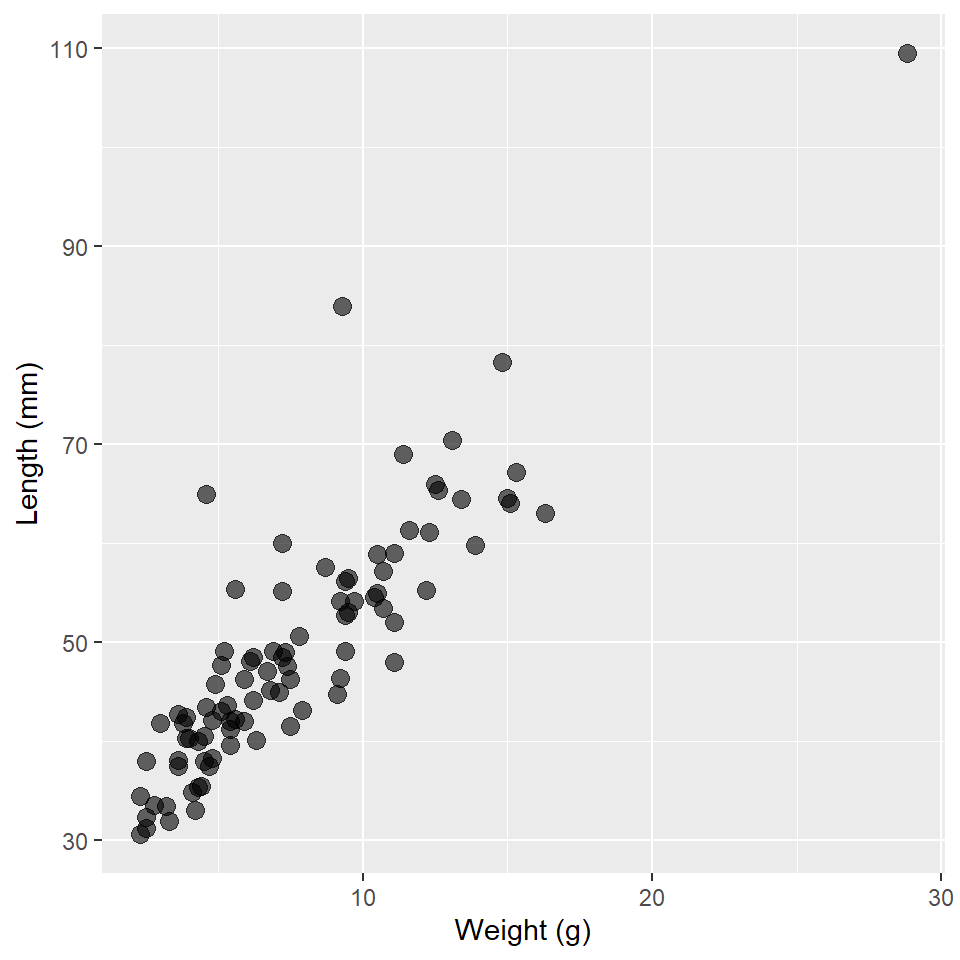

Lab 12: Logistic Regression
(Stats) Modeling binary outcomes and proportions with logistic regression. Evaluating GLMs with Deviance, Information Criteria, and the Likelihood Ratio Test. (R) Fitting logistic models and evaluating them with LRT.
Outline
Objectives
This lab will guide you through the process of
- Fitting a GLM with a
- Gaussian distribution
- Binomial distribution
- Evaluating models with a Likelihood Ratio Test
R Packages
We will be using the following packages:
Data
-
DartPoints- Includes measurements of 91 Archaic dart points recovered during surface surveys at Fort Hood, Texas.
- package:
archdata - reference: https://cran.r-project.org/web/packages/archdata/archdata.pdf
-
Handaxes- Includes measurements of length, width, and thickness for handaxes from the Furze Platt site in England.
- package:
archdata - reference: https://cran.r-project.org/web/packages/archdata/archdata.pdf
-
OxfordPots- Includes proportions of Romano-British Oxford pottery on 30 sites and their distances from Oxford.
- reference: https://cran.r-project.org/web/packages/archdata/archdata.pdf
-
Snodgrass- Includes measurements of size, location, and contents of 91 pit houses at the Snodgrass site in Butler County, Missouri.
- reference: https://cran.r-project.org/web/packages/archdata/archdata.pdf
Gaussian
In this section and the following, I will walk you through how to make the Generalized Linear Models (or GLMs) introduced in the lecture with R. Then, in the exercises for each section, we’ll work through an additional example for each. We’ll start by fitting a model with a normal or Gaussian family distribution. The question we hope to answer is this:
Question Does the length of an archaic dart point vary as a function of its weight.
To answer that question, we will use the DartPoints data collected from a site in Fort Hood, Texas.
First, we will load the data into R. For practice, we’ll also write it to disk and read it back in, in each case using the here() function to specify relative file paths in our project folder. Note that I am going to change the name of the object to darts. While it’s current name is fine, I find that keeping names short - but descriptive! - and in lowercase format - as far as that is possible anyway - saves you some typing effort and reduces the potential for errors in your R code. While we’re at it, we’ll set all the variable names in the table to lower case using the base R function tolower() and the dplyr function rename_with(). Then, to make it clearer that the name variable is actually a dart type, we’ll rename it using the dplyr verb rename(). Note that rename() uses the "new_name" = old_name syntax. I’ll also convert it to a tibble with as_tibble() to make it print pretty.
#> # A tibble: 91 × 17
#> type catalog tarl quad length width thick…¹ b.width j.width h.len…² weight
#> <fct> <chr> <chr> <chr> <dbl> <dbl> <dbl> <dbl> <dbl> <dbl> <dbl>
#> 1 Darl 41-0322 41CV… 26/59 42.8 15.8 5.8 11.3 10.6 11.6 3.6
#> 2 Darl 35-2946 41CV… 21/63 40.5 17.4 5.8 NA 13.7 12.9 4.5
#> 3 Darl 35-2921 41CV… 20/63 37.5 16.3 6.1 12.1 11.3 8.2 3.6
#> 4 Darl 36-3487 41CV… 10/54 40.3 16.1 6.3 13.5 11.7 8.3 4
#> 5 Darl 36-3321 41CV… 12/58 30.6 17.1 4 12.6 11.2 8.9 2.3
#> 6 Darl 35-2959 41CV… 21/63 41.8 16.8 4.1 12.7 11.5 11 3
#> 7 Darl 35-2866 41CV… 25/65 40.3 20.7 5.9 11.7 11.4 7.6 3.9
#> 8 Darl 41-0323 41CV… 26/59 48.5 18.7 6.9 14.7 13.4 9.2 6.2
#> 9 Darl 35-2325 41CV… 20/48 47.7 17.5 7.2 14.3 11.8 8.9 5.1
#> 10 Darl 40-0847 41CV… 05/48 33.6 15.8 5.1 NA 12.5 11.5 2.8
#> # … with 81 more rows, 6 more variables: blade.sh <fct>, base.sh <fct>,
#> # should.sh <fct>, should.or <fct>, haft.sh <fct>, haft.or <fct>, and
#> # abbreviated variable names ¹thickness, ²h.lengthNow, of course, we’ll want to visualize our data, in particular the relationship between dart length and weight. These are quantitative measures, so let’s make a scatter plot.
ggplot(
darts,
aes(weight, length)
) +
geom_point(
size = 3,
alpha = 0.6 # increase transparency to address the over-plotting of points
) +
labs(
x = "Weight (g)",
y = "Length (mm)"
)
Now, let’s fit a GLM! To do that, we’ll use the glm() function. The syntax for specifying a model with this function should be familiar to you. It’s just like fitting a linear model with lm(), albeit with one important exception. You have to specify an exponential distribution and a link function. To do that, we use the family argument to glm(), providing it with a family function that itself takes a link argument. It looks like this:
Note that the identity link function is the default for the gaussian() function, so you don’t actually have to specify it. The parentheses are not strictly necessary either (for reasons beyond the scope of this class), so we could instead call the glm() function this way:
glm_darts <- glm(
length ~ weight,
family = gaussian,
data = darts
)That said, in all the examples that follow, I am going to use the first formulation to make it as explicit as possible that you are always, always, always including a distribution and link function when fitting a GLM.
So, now we have our model. Let’s look at a summary.
summary(glm_darts)
#>
#> Call:
#> glm(formula = length ~ weight, family = gaussian(link = "identity"),
#> data = darts)
#>
#> Deviance Residuals:
#> Min 1Q Median 3Q Max
#> -10.540 -3.865 -0.598 2.249 30.255
#>
#> Coefficients:
#> Estimate Std. Error t value Pr(>|t|)
#> (Intercept) 28.971 1.328 21.8 <0.0000000000000002 ***
#> weight 2.664 0.152 17.5 <0.0000000000000002 ***
#> ---
#> Signif. codes: 0 '***' 0.001 '**' 0.01 '*' 0.05 '.' 0.1 ' ' 1
#>
#> (Dispersion parameter for gaussian family taken to be 37)
#>
#> Null deviance: 14599.0 on 90 degrees of freedom
#> Residual deviance: 3294.7 on 89 degrees of freedom
#> AIC: 590.9
#>
#> Number of Fisher Scoring iterations: 2There are four things to note with this summary.
- The dispersion parameter is 37. For a GLM fit with a Gaussian distribution, this is equivalent to the square of the residual standard error in a linear model, ie, the mean squared error.
- The null deviance is 14599. This is the product of -2 and the difference in the log-Likelihood of an intercept-only model and a saturated model (a model with a parameter for each observation, ie, a perfect fit).
- The residual deviance is 3294.7. This is the product of -2 and the difference in log-Likelihood of the fitted model and a saturated model.
- The AIC (or Akaike Information Criterion) is 590.866. This is calculated using the formula:
\[AIC = -2\,log\,\mathcal{L} + 2p\]
where \(log\,\mathcal{L}\) is the log-Likelihood and \(p\) is the number of parameters in the model (+1 for the estimate of the error variance). In this case, the model has an intercept, one covariate, weight, and the error variance, so \(p = 3\).
These are all ways of evaluating the model’s goodness-of-fit, but as always, we would like to know if the increased complexity is worth it. There are two ways we can try to answer this question. The first is simply to compare the AIC score of the model we have just proposed to an intercept-only model, as the AIC incorporates a penalty for complexity. As this compares 2 times the negative log-Likelihood (ie the deviance), a smaller score is always better, so we want the AIC of our proposed model to be less than the AIC of the null model. To extract the AIC estimate from a model, we use AIC().
That’s a bingo! But, let’s take this idea a bit further and try some inference with it. In particular, let’s use an ANOVA (specifically, a Likelihood Ratio Test or LRT) to compare the ratio of the likelihoods of these models to a \(\chi^2\) distribution. This will tell us if they are significantly different. To do that in R, we use the anova() function, setting its test argument to "LRT".
anova(glm_null, glm_darts, test = "LRT")
#> Analysis of Deviance Table
#>
#> Model 1: length ~ 1
#> Model 2: length ~ weight
#> Resid. Df Resid. Dev Df Deviance Pr(>Chi)
#> 1 90 14599
#> 2 89 3295 1 11304 <0.0000000000000002 ***
#> ---
#> Signif. codes: 0 '***' 0.001 '**' 0.01 '*' 0.05 '.' 0.1 ' ' 1Because the p-value here is significantly less than the critical value \(\alpha = 0.05\), we can reject the null hypothesis that there is no significant difference in the log-Likelihood of these models. So, our model of dart length as a function of dart weight does indeed fit the data (re: explain the data) better than an intercept-only null model.
Exercises
For these exercises, we’ll use the Handaxes dataset from the archdata package. We are going to see if we can predict handaxe length as a function of thickness.
- First, load the
Handaxestable withdata("Handaxes"). - Now, let’s do some data wrangling with this table. Bonus points if you can put this all through one pipe. And make sure to assign it back to your table, so that it saves the changes!
- Change all the names to lowercase with
rename_with(tolower). - Use
select()to grab the catalog number (catalog), length (l), breadth (b), and thickness (t) variables. - Use
rename()to renamel,b, andttolength,width, andthickness, respectively. This will make it clearer what these variables are. Hint: use the"new_name" = old_namesyntax, for example,"length" = l.
- Change all the names to lowercase with
- Practice writing the data to disk and reading it back in using
write_csv()andread_csv(). Usehere()to set the file path. While you do it, replaceHandaxeswithhandaxes, andremove(Handaxes). - Make a scatter plot of the data.
- Build a GLM of handaxe length as a function of thickness using a Gaussian distribution and the identity link.
- Build an intercept-only GLM of handaxe length using the same distribution and link.
- Compare the AIC of these two models.
- Is the AIC of the proposed model less than or greater than the AIC of the intercept-only model?
- Now compare these models using a Likelihood Ratio Test with
anova()andtest = "LRT".- What is the result? Is there a significant improvement?
Binomial
We’re going to do the exact same thing we just did with a Gaussian GLM, but we’re going to do it with a binary response variable. That means logistic regression, which requires that we specify a binomial distribution with a logit link. Here, we’ll be using the Snodgrass data to answer the following
Question Does the size of a house structure (measured in square feet) make it more or less likely that the structure is found inside the inner walls of the site?
So, first, we’ll load in the data. Again, we’ll write it to disk and read it back in, changing the name to snodgrass and remove Snodgrass from our environment. When we read it back, we’ll also convert it to a tibble and convert all the variable names to lowercase. Note that Snodgrass has a number of additional variables we don’t actually need for this exercise, so we’ll subset the table using select() to grab only the variables of interest, namely the response variable inside and our predictor area. In its current form, the response variable inside is a character variable consisting of two values "Inside" and "Outside". We’ll want to convert this to a binary numeric variable with a value 1 if "Inside" and a value 0 if "Outside". We’ll use mutate() and a really nice programming function called ifelse() to do that.
data("Snodgrass")
filename <- here("data", "snodgrass.csv")
write_csv(Snodgrass, filename = filename)
snodgrass <- read_csv(filename) |>
as_tibble() |>
rename_with(tolower) |>
select(inside, area) |>
mutate(inside = ifelse(inside == "Inside", 1, 0)) # read as "if Inside, set to 1, else 0"
remove(Snodgrass, filename)
snodgrass#> # A tibble: 91 × 2
#> inside area
#> <dbl> <dbl>
#> 1 0 144
#> 2 0 256
#> 3 1 306
#> 4 1 452.
#> 5 1 410
#> 6 1 264
#> 7 1 342
#> 8 1 399
#> 9 0 60
#> 10 0 217
#> # … with 81 more rowsAs before, we’ll plot these data using a scatterplot.
ggplot(snodgrass, aes(area, inside)) +
geom_point(
size = 3,
alpha = 0.6
) +
labs(
x = "Area (sq ft)",
y = "Inside inner wall"
)
Notice anything suspicious? Well, let’s confirm (or deny) that suspicion with a GLM! Again, we’ll specify an exponential distribution and a link function using the family argument to glm(), providing it with a family function that itself takes a link argument. It looks like this:
glm_snodgrass <- glm(
inside ~ area,
family = binomial(link = "logit"),
data = snodgrass
)
summary(glm_snodgrass)
#>
#> Call:
#> glm(formula = inside ~ area, family = binomial(link = "logit"),
#> data = snodgrass)
#>
#> Deviance Residuals:
#> Min 1Q Median 3Q Max
#> -2.110 -0.481 -0.184 0.288 2.571
#>
#> Coefficients:
#> Estimate Std. Error z value Pr(>|z|)
#> (Intercept) -8.66307 1.81844 -4.76 0.0000019 ***
#> area 0.03476 0.00751 4.63 0.0000037 ***
#> ---
#> Signif. codes: 0 '***' 0.001 '**' 0.01 '*' 0.05 '.' 0.1 ' ' 1
#>
#> (Dispersion parameter for binomial family taken to be 1)
#>
#> Null deviance: 123.669 on 90 degrees of freedom
#> Residual deviance: 57.728 on 89 degrees of freedom
#> AIC: 61.73
#>
#> Number of Fisher Scoring iterations: 6Looks like our intercept and slope estimates are significant. How about the deviance? Let’s compare the AIC of this model to the AIC of an intercept-only model and use LRT to see if this model is significantly better than an intercept-only model.
glm_null <- glm(
inside ~ 1,
family = binomial(link = "logit"),
data = snodgrass
)
AIC(glm_snodgrass) < AIC(glm_null)
#> [1] TRUE
anova(glm_null, glm_snodgrass, test = "LRT")
#> Analysis of Deviance Table
#>
#> Model 1: inside ~ 1
#> Model 2: inside ~ area
#> Resid. Df Resid. Dev Df Deviance Pr(>Chi)
#> 1 90 123.7
#> 2 89 57.7 1 65.9 0.00000000000000046 ***
#> ---
#> Signif. codes: 0 '***' 0.001 '**' 0.01 '*' 0.05 '.' 0.1 ' ' 1A bingo two-times!
Exercises
For these exercises, we’ll use the DartPoints dataset from the archdata package. We are going to use length to see if we can discriminate Pedernales dart points from the other dart points.
- First, load the
DartPointstable withdata("DartPoints"). - Now, let’s do some data wrangling with this table. Make sure to assign it back to your table, so that it saves the changes!And bonus points if you can put this all through one pipe!
- Change all the names to lowercase with
rename_with(tolower). - Use
select()to grab the name (name) and length (length) variables. - Use
rename()to renamenametotype. Hint: use the"new_name" = old_namesyntax, for example,"length" = l. -
THIS IS IMPORTANT!!! Use
mutate()andifelse()to add a columnpedernalesthat is1if the type isPedernalesand 0 otherwise. Hint: fill in the ellipsis inmutate(pedernales = ifelse(type == ...)).
- Change all the names to lowercase with
- Practice writing the data to disk and reading it back in using
write_csv()andread_csv(). Usehere()to set the file path. While you do it, replaceDartPointswithdarts, andremove(DartPoints). - Make a scatter plot of the data.
- Build a GLM of the Pedernales type as a function of dart length using a Binomial distribution and the logit link.
- Build an intercept-only GLM of the Pedernales type using the same distribution and link.
- Compare the AIC of these two models.
- Is the AIC of the proposed model less than or greater than the AIC of the intercept-only model?
- Now compare these models using a Likelihood Ratio Test with
anova()andtest = "LRT".- What is the result? Is there a significant improvement?
Homework
For the homework, we’ll use the OxfordPots dataset from the archdata package. We are going to see if we can estimate the fraction of Romano-British pottery as a function of distance from Oxford.
- First, load the
OxfordPotstable withdata("OxfordPots"). - Now, let’s do some data wrangling with this table. Make sure to assign it back to your table, so that it saves the changes!And bonus points if you can put this all through one pipe!
- Change all the names to lowercase with
rename_with(tolower). - Use
select()to grab the fraction of Romano-British pots (OxfordPct) and distance (OxfordDst) from Oxford variables. - Use
rename()to renameOxfordPcttoproportionandOxfordDsttodistance. Hint: use the"new_name" = old_namesyntax, for example,"proportion" = OxfordPct. -
THIS IS IMPORTANT!!! The
OxfordPctorproportionvariable is currently a percentage, but a GLM with a binomial response wants the range of the response to be between 0 and 1, not 0 and 100. So, we need to divide the percentage values by 100. To do this, usemutate(). Hint: fill in the ellipsis inmutate(proportion = ...).
- Change all the names to lowercase with
- Practice writing the data to disk and reading it back in using
write_csv()andread_csv(). Usehere()to set the file path. While you do it, replaceDartPointswithdarts, andremove(DartPoints). - Make a scatter plot of the data.
- Build a GLM of the proportion of Romano-British pots as a function of distance from Oxford using a Binomial distribution and the logit link.
- Build an intercept-only GLM using the same distribution and link.
- Compare the AIC of these two models.
- Is the AIC of the proposed model less than or greater than the AIC of the intercept-only model?
- Now compare these models using a Likelihood Ratio Test with
anova()andtest = "LRT".- What is the result? Is there a significant improvement?